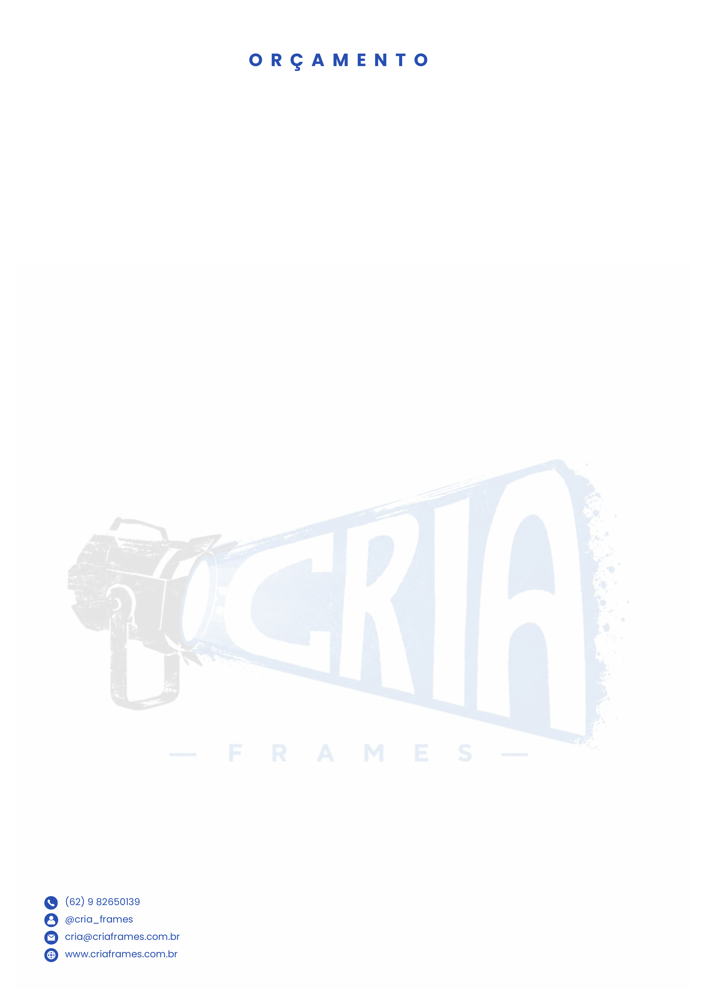

Seedance 2.0
Usado para animação, exploração e maior flexibilidade. Cenas acima de 15s são divididas em duas gerações.
Preencha quatro etapas simples. O sistema calcula quanto cobrar, protege a margem da produtora e mostra quanto cabe a cada pessoa.
Comece pelo básico. Estes dados identificam o orçamento e definem os adicionais comerciais.
O prazo é contado automaticamente a partir de hoje.
Monte o filme cena por cena. Cada cena deve ter entre 15 e 30 segundos.
Realismo e qualidade definem os modelos e a quantidade provável de tentativas.
O sistema divide cada cena em blocos de geração, aplica o custo do nível de realismo, da qualidade e das tentativas esperadas para a complexidade. O prazo acrescenta urgência quando a data de entrega está muito próxima.
Informe despesas reais. A equipe e a tecnologia já entram automaticamente no cálculo.
Assinaturas mensais divididas pela quantidade de projetos do mês.
Detalhamento por cena usando a tabela interna configurada.
Usado para animação, exploração e maior flexibilidade. Cenas acima de 15s são divididas em duas gerações.
Usado quando o pedido exige realismo, consistência e direção mais rígida. Valores de 720p e 1080p são estimados.
Valores pagos especificamente para este projeto.
Somamos equipe, tecnologia e fornecedores. Depois adicionamos contingência e calculamos um preço que já comporte impostos, comissão e a margem desejada.
Defina as horas e o valor do trabalho de cada pessoa. O resultado líquido do projeto vai para o caixa da Cria.
Os valores/hora iniciais já estão readequados em 15% para a realidade atual da produtora.
Identifique quem trouxe o lead deste projeto.
Use o documento interno para a equipe e a versão externa para apresentar ao cliente.

—
—
—